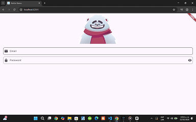

Oso Animado
Un login animado en Flutter con Rive donde el personaje sigue el cursor en el email, se tapa los ojos con la contraseña y reacciona distinto según el resultado del inicio de sesión. Una pequeña demo de UI/UX interactiva que hace la experiencia más divertida.